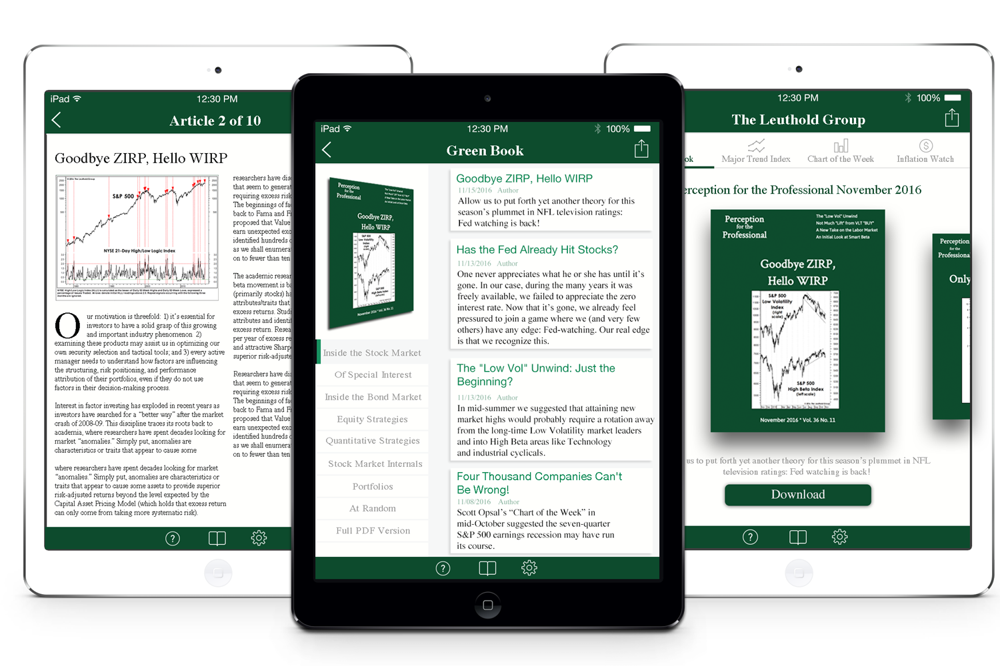

The Leuthold Group
The Leuthold Group App is an iPad app that gives users access to the latest financial information, the latest share price and financial news, publications, news releases, and the most recent webcasts and strategic presentations.
The Leuthold Group
Intro
-
BACKGROUND
The Leuthold Group is an accounting and financial company that currently publishes their monthly market research to web and print. They would also like to deliver it via an iPad app. The client wants a design of the home page, the one issue page and the article page.
-
CHALLENGE
1.The the website content of the company is complicated. The publication is a 70-110 pages of charts, tables and commentary. It is broken down into seven sections with multiple articles per section.
2. I was tasked to reorganize the content in a more intuitive and logical way and then delivered it via an iPad App.
3. Persuaded stakeholders to switch a direction based on user research and user needs. -
MY ROLE
1. As a User Researcher and User Designer, I conducted surveys, user interviews, competitive analysis, affinity mapping, personas, feature prioritization, and function matrices. I also communicated with the client on a regular basis to discuss design choices.
2. As a UI Designer, I sketched and created low-fidelity wireframes, and high-fidelity mockups in Sketch.
STEP1. OBSERVE
Interview Target Audience
Create affinity diagram.
Purpose: organize activity notes into common
patterns and themes across users.
Create Personas.
Goal: to create reliable and realistic representations of the key audience segments for reference.
Identify pain points:
Users want to read the complicated content in an intuitive and simple way.
Think
Inspirations
The client wants easy to read fonts, brand adherence, clean lines and colors. He would like me to refernce
the Economist App, Barron's App and the New Yorker App. The client would also like me to leverage their existing website: http://www.leutholdgroup.com/. Therefore, I keep the design style consistent with the existing website.
{kind=link}
{kind=link}
{kind=link}
DESIGN
Low-fi prototype: wireframes.
Wireframe of the home page and the 1 issue page.
Main Interactions I designed
1. On the home page, users can swipe right or left to browse issues and then download them. I made this design choice because it was an intuitive interaction and common practice. Many ios apps such as the App Store, the Economist use this approach. Therefore, the learning curve would be small.
2. On the 1 issue page, I used a verticle scroll list view approach to display all the articles. The articles are organized based on their categories. Users can choose a category on the left to view articles in that category.
DESIGN
Low-fi prototype: wireframes.
Wireframe of the article page and the interaction flow.
DESIGN
Mid-fi prototype: I added some UI elements.
DESIGN
Mid-fi prototype
Accesibility Feature
1. I add an accesibility feature that allows users to enlarge font-size. So that elderly and users who find the default text too small could have better reading experiences by adjusting the font-size themselves.
DESIGN
Mid-fi prototype
Accesibility Feature
1. I add an accesibility feature that allows users to enlarge font-size. So that elderly and users who find the default text too small could have better reading experiences by adjusting the font-size themselves.
PROTOTYPING AND TESTING
Video record of one user's interaction with the prototype
I sent out the prototype to the users and then asked them to perform some tasks and to answer some questions. I video recorded how they interacted with the prototype. They tried out the prototype while expressing their thoughts on the prototype.
ANALYSIS AND IMPROVEMENT
Based on users' feedback, I made some changes on the home page.
1. I changed the color of the download button to make it more noticeable and intuitive.
2. I added shadow to the image of the issue to make users aware that it was an object that was swipable.
3. I also fine-tuned the color scheme to make it look more professional.
ANALYSIS AND IMPROVEMENT
Changes on the 1 issue page:
I also fine-tuned the visual design to make it look more professional.
ANALYSIS AND IMPROVEMENT
Changes on the article page:
I changed the one-column display to be two-column display. Some users are fast readers who want to browse more content in a short time. The two-column display shows more information one a page than single column. The enlarge font-size feature would cater to users who think the font is too small in a two column display. If users hold their iPads horizontally, they are still able to view the content in single column.